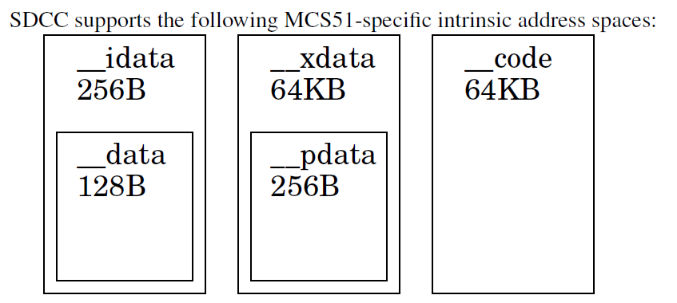
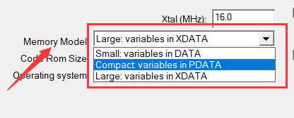
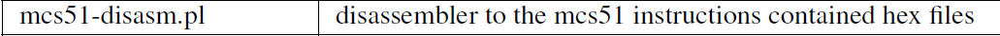
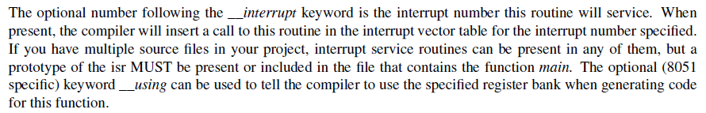
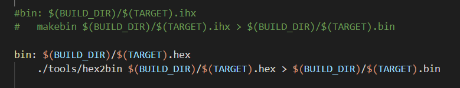

SDCC 是一个小型设备的 C 语言编译器，该编译器支持标准 C 语言；相对于 GCC 编译器来说可能知名度不是很高，但它跟 GCC 一样，是跨平台，并且遵循 GPL 开源协议。本次实验是使用 nuvoton 的 MS51 系列单片机来操作（基于 8051 内核）
sdcc 官方网址：http://sdcc.sourceforge.net/
Wiki 主页：https://sourceforge.net/p/sdcc/wiki/Home/
# 关于 SDCC
SDCC 是可重定目标的、优化的标准 C（ANSI C89，ISO C99，ISO C11）编译器套件，针对的是基于 Intel MCS51 的微处理器（8031、8032、8051、8052 等），Maxim（以前为达拉斯）DS80C390 变体，飞思卡尔（ 基于 HC08（hc08，s08），基于 Zilog Z80 的 MCU（z80，z180，gbz80，Rabbit 2000/3000，Rabbit 3000A，TLCS-90），Padauk（pdk14，pdk15）和 STMicroelectronics STM8。
在安装了 SDCC 后，通过指令查看版本号可以看到它所支持的设备类型：

然后，这里有个帖子有讨论 SDCC 的一些相关东西，而且好像（我也不确定）SDCC 的开发者也在里面，感兴趣的可以看一下：https://wap.newsmth.net/article/905eb27dddf829f15c81077215d66284?title = 电路设计与调试 & from=search
SDCC 较于 Keil 来说，它对 C 语法的严谨度是很高的，更像一个标准的 C 语言编译器，并不会像 Keil 那样把一些 warning 去除掉，自动帮你优化；前面说了， SDCC 是一个好的编译器，可优化方面稍微有点不够完美，以至于代码生成的体积还是比 Keil C51 大一些（是不是我还有些优化指令没 get 到呢？）。
# 安装及环境配置
1、 SDCC
软件的下载路径在上面的 sdcc 主页上有对应的接口，只需要下载相关的平台程序包安装就好了，安装完成后添加系统环境变量这个就不用多说了，最后就 sdcc -v 测试检验。就这么简单。。。
2、 MinGW-w64
下载地址：https://sourceforge.net/projects/mingw-w64/files/mingw-w64/mingw-w64-release/
安装完成后需要添加系统环境变量，可以利用 cmd 命令： gcc -v 测试。
3、 MSYS2 或者 Git（只要支持 shell 命令的终端控制台就行）
msys2 下载 <-- 自戳
Git 自行搜索下载。
2、 VSCode
VSCode 环境部署可以看之前的 STM32 开发之 VS Code + gcc 环境编译 的第三节，然后如果你懂得配置 VSCode 的配置项的话，那么你可以跳过下面的配置操作自己写。
c_cpp_properties.json
{"configurations": [
{"name": "C51",
"includePath": [ // 你的工程中存放 include 的文件夹路径
"${workspaceFolder}/**",
"${workspaceFolder}/App",
"${workspaceFolder}/Libraries/Device/Include",
"${workspaceFolder}/Libraries/StdDriver/inc"],
"defines": [
"_DEBUG",
"UNICODE",
"_UNICODE",
],
"compilerPath": "C:\\Program Files\\SDCC\\bin\\sdcc.exe", //sdcc bin 路径
"cStandard": "gnu18",
"cppStandard": "gnu++14",
"intelliSenseMode": "gcc-x64"
}],
"version": 4
}tasks.json
{// See https://go.microsoft.com/fwlink/?LinkId=733558// for the documentation about the tasks.json format"version": "2.0.0",
"tasks": [
{"label": "Build",
"type": "shell",
"command": "make",
"args": [
"target=${fileBasenameNoExtension}"],
"group": {
"kind": "build",
"isDefault": true
}}]}settings.json
{"files.encoding": "gb2312",
"files.autoGuessEncoding": true,
"C_Cpp.errorSquiggles": "Enabled", // 语法错误
"files.associations": {
"main.h": "c",
},
/* 终端在 Windows 上使用的 shell 的路径 */"terminal.integrated.shell.windows": "C:\\Program Files\\Git\\bin\\bash.exe",
}
# SDCC 规则（仅对于 MCS51 说明）
1、支持的数据类型

2、存储类型

相对于 Keil，其存储类型关键字加上了前缀 ’ __ ' 双下划线，这也是 SDCC 的特色风格。
__data ：这是小内存模式的默认 (通用) 地址空间，声明的变量将被放在 8051 内核的直接寻址 RAM 中。
__idata ：这个地址空间中的变量将被分配到 8051 的内部 RAM 的间接可寻址部分。
__pdata ：存储类型 pdata 用于访问分页的外部数据存储器。
__xdata ：这个地址空间中的变量将被放在外部 RAM 中。
__code ：存放程序代码的内存地址空间。
3、存储器模式
SDCC 支持四种存储器模式：(small, medium, large, huge)
采用 SDCC 编译时，默认为小模式。如果要强制 SDCC 使用特定的存储器模式，可使用以下命令行参数（在手册的 P3.3.6 章节可以查询得到）：

类似于 Keil 的这个选项（只不过 Keil 是 GUI 操作，SDCC 是命令操作）：

关于不同模式下变量的存储位置不一样，可以查阅手册 P3.13 章节；总的来说，对于中（medium）、大（large）、巨大（huge）存储模式来说，所有未指定内部命名地址空间而声明的变量都将分配到外部 RAM 中，这包括所有参数和局部变量（用于不可重入函数），中型模式使用 pdata，大型模式使用 xdata；而小内存模式（small）则默认存放在 data。
4、bit 和 sbit 关键字
bit 和 int、char 之类的差不多，只不过 char = 8 位，bit = 1 位；
sbit 是对应可位寻址空间的一个位。
同样的，在 SDCC 这里加上了前缀 ’ __ ’ 双下划线，变成 __bit 、 __sbit
5、SFR（特殊功能寄存器）
与 bit 关键字类似，表示命名地址空间，用于描述 8051 的特殊函数寄存器和特殊位变量。
eg：
__sfr __at (0x80) P0; /* special function register P0 at location 0x80 */
6、绝对寻址
SDCC 支持采用 __at 关键字表示绝对寻址。
7、内嵌汇编
SDCC 完全支持内嵌汇编。使用该功能时，汇编代码应嵌在 __asm 和 __endasm 标识符之间。
8、编译生成文件
- xxx.asm：程序的汇编文件。
- xxx.lst：程序的列表文件。
- xxx.rst：被链接器更新的列表文件。
- xxx.sym：由链接器生成的符号清单。
- xxx.rel：由汇编器生成的对象文件，提供给链接器使用。
- xxx.map：被链接器更新的最终存储器映射。
- xxx.mem：内存的使用情况摘要。
- xxx.ihx：Intel 十六进制格式的加载模块。该文件必须被下载到微控制器中。
# SDCC 头文件处理
前面说了，sdcc 的非标关键字是带 ‘ __ ' 双下滑线的，但是 MS51 的官方 SDK 包中，寄存器寻址的关键字全是 keil 格式的，这就需要转换过来；如果是一些成熟的 8051 内核单片机，那么你可以在 sdcc 的安装路径 ...\SDCC\include\mcs51 下找到对应的芯片头文件，若是没有，那么就要自己进行格式转换了。sdcc 格式转换，你可以去上网搜一下，这里给一个链接：https://www.amobbs.com/thread-5625040-1-1.html，里面有提供一个转换工具，当然你也可以自己去写一个程序。

# 工程构建
因为是用 VSCode 做编辑开发，只要有 .vscode 文件夹的配置项就可以了，剩下的编译过程就交给 sdcc 编译，所以工程的构建比较简单，文件夹创建以及移植 SDK 库都方便，以下是我的工程文件分布（看起来还是比较容易理解的）：

这里 Libraries 文件夹的内容是直接移植 SDK 库的，其余的看文件名就知道用途了。
另外就是，App 文件夹里，除了 lint.h（用来语法解析 mcs51 特定代码）和添加了 main.h 头文件（往常 main 主文件是不带头文件）；然后为什么要这两个呢，是为了避免 VSCode 的语法错误的，当然你也可以一劳永逸，直接关了 VSCode 的语法提示（这个可以看上面的 settings.json 配置文件），至于 lint.h 是从 sdcc 的安装路径 ...\SDCC\include\mcs51 提取出来的，原滋原味。
# VSCode 语法修饰
上面也讲了，sdcc 使用了部分非 ASCII C 关键字，所以 VSCode 会在程序中凸显语法错误；那么，我们就来解决这个问题（当然，不是用关闭语法检查这种粗暴形式）：
1、首先要了解的是，在使用 sdcc 进行编译的时候，是会自动在进行编译前预定义 __SDCC 宏的，这样就好办，利用条件编译，区别智能提示运行环境和 SDCC 实际编译环境，用空的 define 去取代这些关键字，寄存器也都用宏代替，然后在 SDCC 实际编译时调用原来 C51 语法的寄存器定义。
2、根据上面第一点，然后结合上面的提到的 lint.h（默认是留了 sdcc 关键字的空 define），得到这样的一个例子：
#ifdef __SDCC | |
__sfr __at (0x80) P0; // 实际有效的寄存器定义 | |
#else | |
/* 关键字部分 */ | |
#define __sfr // 空的关键字宏，消除关键字不兼容 (在 lint.h 上可以获取到相关的关键字) | |
... | |
... | |
/* 寄存器部分 */ | |
#define P0 (*(char *) (0x80)) // 无实际意义，用于兼容（欺骗）标准 C 语法的寄存器符号 | |
... | |
... | |
#endif |
通过以上条件编译，就可以把代码区分到智能提示和实际编译两个环境：
- 在实际编译时，SDCC 编译器会预定义
__SDCC宏，因此实际编译时使用实际有效的寄存器定义； - 而在智能提示环境，用空的宏取代所有关键字，消除关键字的不兼容，然后用一个宏定义寄存器，保证寄存器名智能提示依然可以使用。这里将寄存器定义为 char* 指针解引用的左值表达式，目的是为迎合语法上对寄存器赋值是合法的，括号里的值可以是任意值，意义不大，当然如果使用寄存器本来的值更合适，但处理起来比较麻烦。
3、对上面的 1、2 点总结起来，就可以得到：
#ifndef __MAIN_H__ | |
#define __MAIN_H__ | |
#include <stdint.h> | |
#ifdef __SDCC | |
#include "MS51_16K.h" | |
#else | |
#include <stdbool.h> | |
#include "lint.h" | |
#include "SFR_Macro_MS51_16K.h" | |
/******************************************************************************/ | |
/* Macro define header files */ | |
/******************************************************************************/ | |
#define P0 (*(char *) (0)) //= 0x80; | |
#define SP (*(char *) (0)) //= 0x81; | |
#define DPL (*(char *) (0)) //= 0x82; | |
#define DPH (*(char *) (0)) //= 0x83; | |
#define RCTRIM0 (*(char *) (0)) //= 0x84; | |
#define RCTRIM1 (*(char *) (0)) //= 0x85; | |
#define RWK (*(char *) (0)) //= 0x86; | |
#define PCON (*(char *) (0)) //= 0x87; | |
#define TCON (*(char *) (0)) //= 0x88; | |
#define TMOD (*(char *) (0)) //= 0x89; | |
#define TL0 (*(char *) (0)) //= 0x8A; | |
#define TL1 (*(char *) (0)) //= 0x8B; | |
#define TH0 (*(char *) (0)) //= 0x8C; | |
#define TH1 (*(char *) (0)) //= 0x8D; | |
#define CKCON (*(char *) (0)) //= 0x8E; | |
#define WKCON (*(char *) (0)) //= 0x8F; | |
#define P1 (*(char *) (0)) //= 0x90; | |
#define SFRS (*(char *) (0)) //= 0x91; //TA Protection | |
#define CAPCON0 (*(char *) (0)) //= 0x92; | |
#define CAPCON1 (*(char *) (0)) //= 0x93; | |
#define CAPCON2 (*(char *) (0)) //= 0x94; | |
#define CKDIV (*(char *) (0)) //= 0x95; | |
#define CKSWT (*(char *) (0)) //= 0x96; //TA Protection | |
#define CKEN (*(char *) (0)) //= 0x97; //TA Protection | |
#define SCON (*(char *) (0)) //= 0x98; | |
#define SBUF (*(char *) (0)) //= 0x99; | |
#define SBUF_1 (*(char *) (0)) //= 0x9A; | |
#define EIE (*(char *) (0)) //= 0x9B; | |
#define EIE1 (*(char *) (0)) //= 0x9C; | |
#define CHPCON (*(char *) (0)) //= 0x9F; //TA Protection | |
#define P2 (*(char *) (0)) //= 0xA0; | |
#define AUXR1 (*(char *) (0)) //= 0xA2; | |
#define BODCON0 (*(char *) (0)) //= 0xA3; //TA Protection | |
#define IAPTRG (*(char *) (0)) //= 0xA4; //TA Protection | |
#define IAPUEN (*(char *) (0)) //= 0xA5; //TA Protection | |
#define IAPAL (*(char *) (0)) //= 0xA6; | |
#define IAPAH (*(char *) (0)) //= 0xA7; | |
#define IE (*(char *) (0)) //= 0xA8; | |
#define SADDR (*(char *) (0)) //= 0xA9; | |
#define WDCON (*(char *) (0)) //= 0xAA; //TA Protection | |
#define BODCON1 (*(char *) (0)) //= 0xAB; //TA Protection | |
#define P3M1 (*(char *) (0)) //= 0xAC; | |
#define P3S (*(char *) (0)) //= 0xAC; //Page1 | |
#define P3M2 (*(char *) (0)) //= 0xAD; | |
#define P3SR (*(char *) (0)) //= 0xAD; //Page1 | |
#define IAPFD (*(char *) (0)) //= 0xAE; | |
#define IAPCN (*(char *) (0)) //= 0xAF; | |
#define P3 (*(char *) (0)) //= 0xB0; | |
#define P0M1 (*(char *) (0)) //= 0xB1; | |
#define P0S (*(char *) (0)) //= 0xB1; //Page1 | |
#define P0M2 (*(char *) (0)) //= 0xB2; | |
#define P0SR (*(char *) (0)) //= 0xB2; //Page1 | |
#define P1M1 (*(char *) (0)) //= 0xB3; | |
#define P1S (*(char *) (0)) //= 0xB3; //Page1 | |
#define P1M2 (*(char *) (0)) //= 0xB4; | |
#define P1SR (*(char *) (0)) //= 0xB4; //Page1 | |
#define P2S (*(char *) (0)) //= 0xB5; | |
#define IPH (*(char *) (0)) //= 0xB7; | |
#define PWMINTC (*(char *) (0)) //= 0xB7; //Page1 | |
#define IP (*(char *) (0)) //= 0xB8; | |
#define SADEN (*(char *) (0)) //= 0xB9; | |
#define SADEN_1 (*(char *) (0)) //= 0xBA; | |
#define SADDR_1 (*(char *) (0)) //= 0xBB; | |
#define I2DAT (*(char *) (0)) //= 0xBC; | |
#define I2STAT (*(char *) (0)) //= 0xBD; | |
#define I2CLK (*(char *) (0)) //= 0xBE; | |
#define I2TOC (*(char *) (0)) //= 0xBF; | |
#define I2CON (*(char *) (0)) //= 0xC0; | |
#define I2ADDR (*(char *) (0)) //= 0xC1; | |
#define ADCRL (*(char *) (0)) //= 0xC2; | |
#define ADCRH (*(char *) (0)) //= 0xC3; | |
#define T3CON (*(char *) (0)) //= 0xC4; | |
#define PWM4H (*(char *) (0)) //= 0xC4; //Page1 | |
#define RL3 (*(char *) (0)) //= 0xC5; | |
#define PWM5H (*(char *) (0)) //= 0xC5; //Page1 | |
#define RH3 (*(char *) (0)) //= 0xC6; | |
#define PIOCON1 (*(char *) (0)) //= 0xC6; //Page1 | |
#define TA (*(char *) (0)) //= 0xC7; | |
#define T2CON (*(char *) (0)) //= 0xC8; | |
#define T2MOD (*(char *) (0)) //= 0xC9; | |
#define RCMP2L (*(char *) (0)) //= 0xCA; | |
#define RCMP2H (*(char *) (0)) //= 0xCB; | |
#define TL2 (*(char *) (0)) //= 0xCC; | |
#define PWM4L (*(char *) (0)) //= 0xCC; //Page1 | |
#define TH2 (*(char *) (0)) //= 0xCD; | |
#define PWM5L (*(char *) (0)) //= 0xCD; //Page1 | |
#define ADCMPL (*(char *) (0)) //= 0xCE; | |
#define ADCMPH (*(char *) (0)) //= 0xCF; | |
#define PSW (*(char *) (0)) //= 0xD0; | |
#define PWMPH (*(char *) (0)) //= 0xD1; | |
#define PWM0H (*(char *) (0)) //= 0xD2; | |
#define PWM1H (*(char *) (0)) //= 0xD3; | |
#define PWM2H (*(char *) (0)) //= 0xD4; | |
#define PWM3H (*(char *) (0)) //= 0xD5; | |
#define PNP (*(char *) (0)) //= 0xD6; | |
#define FBD (*(char *) (0)) //= 0xD7; | |
#define PWMCON0 (*(char *) (0)) //= 0xD8; | |
#define PWMPL (*(char *) (0)) //= 0xD9; | |
#define PWM0L (*(char *) (0)) //= 0xDA; | |
#define PWM1L (*(char *) (0)) //= 0xDB; | |
#define PWM2L (*(char *) (0)) //= 0xDC; | |
#define PWM3L (*(char *) (0)) //= 0xDD; | |
#define PIOCON0 (*(char *) (0)) //= 0xDE; | |
#define PWMCON1 (*(char *) (0)) //= 0xDF; | |
#define ACC (*(char *) (0)) //= 0xE0; | |
#define ADCCON1 (*(char *) (0)) //= 0xE1; | |
#define ADCCON2 (*(char *) (0)) //= 0xE2; | |
#define ADCDLY (*(char *) (0)) //= 0xE3; | |
#define C0L (*(char *) (0)) //= 0xE4; | |
#define C0H (*(char *) (0)) //= 0xE5; | |
#define C1L (*(char *) (0)) //= 0xE6; | |
#define C1H (*(char *) (0)) //= 0xE7; | |
#define ADCCON0 (*(char *) (0)) //= 0xE8; | |
#define PICON (*(char *) (0)) //= 0xE9; | |
#define PINEN (*(char *) (0)) //= 0xEA; | |
#define PIPEN (*(char *) (0)) //= 0xEB; | |
#define PIF (*(char *) (0)) //= 0xEC; | |
#define C2L (*(char *) (0)) //= 0xED; | |
#define C2H (*(char *) (0)) //= 0xEE; | |
#define EIP (*(char *) (0)) //= 0xEF; | |
#define B (*(char *) (0)) //= 0xF0; | |
#define CAPCON3 (*(char *) (0)) //= 0xF1; | |
#define CAPCON4 (*(char *) (0)) //= 0xF2; | |
#define SPCR (*(char *) (0)) //= 0xF3; | |
#define SPCR2 (*(char *) (0)) //= 0xF3; //Page1 | |
#define SPSR (*(char *) (0)) //= 0xF4; | |
#define SPDR (*(char *) (0)) //= 0xF5; | |
#define AINDIDS (*(char *) (0)) //= 0xF6; | |
#define EIPH (*(char *) (0)) //= 0xF7; | |
#define SCON_1 (*(char *) (0)) //= 0xF8; | |
#define PDTEN (*(char *) (0)) //= 0xF9; //TA Protection | |
#define PDTCNT (*(char *) (0)) //= 0xFA; //TA Protection | |
#define PMEN (*(char *) (0)) //= 0xFB; | |
#define PMD (*(char *) (0)) //= 0xFC; | |
#define EIP1 (*(char *) (0)) //= 0xFE; | |
#define EIPH1 (*(char *) (0)) //= 0xFF; | |
/* BIT Registers */ | |
/* SCON_1 */ | |
#define SM0_1 (*(char *) (0)) //= SCON_1^7; | |
#define FE_1 (*(char *) (0)) //= SCON_1^7; | |
#define SM1_1 (*(char *) (0)) //= SCON_1^6; | |
#define SM2_1 (*(char *) (0)) //= SCON_1^5; | |
#define REN_1 (*(char *) (0)) //= SCON_1^4; | |
#define TB8_1 (*(char *) (0)) //= SCON_1^3; | |
#define RB8_1 (*(char *) (0)) //= SCON_1^2; | |
#define TI_1 (*(char *) (0)) //= SCON_1^1; | |
#define RI_1 (*(char *) (0)) //= SCON_1^0; | |
/* ADCCON0 */ | |
#define ADCF (*(char *) (0)) //= ADCCON0^7; | |
#define ADCS (*(char *) (0)) //= ADCCON0^6; | |
#define ETGSEL1 (*(char *) (0)) //= ADCCON0^5; | |
#define ETGSEL0 (*(char *) (0)) //= ADCCON0^4; | |
#define ADCHS3 (*(char *) (0)) //= ADCCON0^3; | |
#define ADCHS2 (*(char *) (0)) //= ADCCON0^2; | |
#define ADCHS1 (*(char *) (0)) //= ADCCON0^1; | |
#define ADCHS0 (*(char *) (0)) //= ADCCON0^0; | |
/* PWMCON0 */ | |
#define PWMRUN (*(char *) (0)) //= PWMCON0^7; | |
#define LOAD (*(char *) (0)) //= PWMCON0^6; | |
#define PWMF (*(char *) (0)) //= PWMCON0^5; | |
#define CLRPWM (*(char *) (0)) //= PWMCON0^4; | |
/* PSW */ | |
#define CY (*(char *) (0)) //= PSW^7; | |
#define AC (*(char *) (0)) //= PSW^6; | |
#define F0 (*(char *) (0)) //= PSW^5; | |
#define RS1 (*(char *) (0)) //= PSW^4; | |
#define RS0 (*(char *) (0)) //= PSW^3; | |
#define OV (*(char *) (0)) //= PSW^2; | |
#define P (*(char *) (0)) //= PSW^0; | |
/* T2CON */ | |
#define TF2 (*(char *) (0)) //= T2CON^7; | |
#define TR2 (*(char *) (0)) //= T2CON^2; | |
#define CM_RL2 (*(char *) (0)) //= T2CON^0; | |
/* I2CON */ | |
#define I2CEN (*(char *) (0)) //= I2CON^6; | |
#define STA (*(char *) (0)) //= I2CON^5; | |
#define STO (*(char *) (0)) //= I2CON^4; | |
#define SI (*(char *) (0)) //= I2CON^3; | |
#define AA (*(char *) (0)) //= I2CON^2; | |
#define I2CPX (*(char *) (0)) //= I2CON^0; | |
/* IP */ | |
#define PADC (*(char *) (0)) //= IP^6; | |
#define PBOD (*(char *) (0)) //= IP^5; | |
#define PS (*(char *) (0)) //= IP^4; | |
#define PT1 (*(char *) (0)) //= IP^3; | |
#define PX1 (*(char *) (0)) //= IP^2; | |
#define PT0 (*(char *) (0)) //= IP^1; | |
#define PX0 (*(char *) (0)) //= IP^0; | |
/* P3 */ | |
#define P30 (*(char *) (0)) //= P3^0; | |
/* IE */ | |
#define EA (*(char *) (0)) //= IE^7; | |
#define EADC (*(char *) (0)) //= IE^6; | |
#define EBOD (*(char *) (0)) //= IE^5; | |
#define ES (*(char *) (0)) //= IE^4; | |
#define ET1 (*(char *) (0)) //= IE^3; | |
#define EX1 (*(char *) (0)) //= IE^2; | |
#define ET0 (*(char *) (0)) //= IE^1; | |
#define EX0 (*(char *) (0)) //= IE^0; | |
/* P2 */ | |
#define P20 (*(char *) (0)) //= P2^0; | |
/* SCON */ | |
#define SM0 (*(char *) (0)) //= SCON^7; | |
#define FE (*(char *) (0)) //= SCON^7; | |
#define SM1 (*(char *) (0)) //= SCON^6; | |
#define SM2 (*(char *) (0)) //= SCON^5; | |
#define REN (*(char *) (0)) //= SCON^4; | |
#define TB8 (*(char *) (0)) //= SCON^3; | |
#define RB8 (*(char *) (0)) //= SCON^2; | |
#define TI (*(char *) (0)) //= SCON^1; | |
#define RI (*(char *) (0)) //= SCON^0; | |
/* P1 */ | |
#define P17 (*(char *) (0)) //= P1^7; | |
#define P16 (*(char *) (0)) //= P1^6; | |
#define TXD_1 (*(char *) (0)) //= P1^6; | |
#define P15 (*(char *) (0)) //= P1^5; | |
#define P14 (*(char *) (0)) //= P1^4; | |
#define SDA (*(char *) (0)) //= P1^4; | |
#define P13 (*(char *) (0)) //= P1^3; | |
#define SCL (*(char *) (0)) //= P1^3; | |
#define P12 (*(char *) (0)) //= P1^2; | |
#define P11 (*(char *) (0)) //= P1^1; | |
#define P10 (*(char *) (0)) //= P1^0; | |
/* TCON */ | |
#define TF1 (*(char *) (0)) //= TCON^7; | |
#define TR1 (*(char *) (0)) //= TCON^6; | |
#define TF0 (*(char *) (0)) //= TCON^5; | |
#define TR0 (*(char *) (0)) //= TCON^4; | |
#define IE1 (*(char *) (0)) //= TCON^3; | |
#define IT1 (*(char *) (0)) //= TCON^2; | |
#define IE0 (*(char *) (0)) //= TCON^1; | |
#define IT0 (*(char *) (0)) //= TCON^0; | |
/* P0 */ | |
#define P07 (*(char *) (0)) //= P0^7; | |
#define RXD (*(char *) (0)) //= P0^7; | |
#define P06 (*(char *) (0)) //= P0^6; | |
#define TXD (*(char *) (0)) //= P0^6; | |
#define P05 (*(char *) (0)) //= P0^5; | |
#define P04 (*(char *) (0)) //= P0^4; | |
#define STADC (*(char *) (0)) //= P0^4; | |
#define P03 (*(char *) (0)) //= P0^3; | |
#define P02 (*(char *) (0)) //= P0^2; | |
#define RXD_1 (*(char *) (0)) //= P0^2; | |
#define P01 (*(char *) (0)) //= P0^1; | |
#define MISO (*(char *) (0)) //= P0^1; | |
#define P00 (*(char *) (0)) //= P0^0; | |
#define MOSI (*(char *) (0)) //= P0^0; | |
#endif /* __SDCC */ | |
#endif /* __MAIN_H__ */ |
对于寄存器定义处理，可以直接 copy 原来的 include 文件内容，然后直接把 sfr 、 sbit 替换成 #define ，再把 = 替换成 (*(char *) (0)) //= 这样就好，是不是很 nice。
# Makefile 程序化管理
SDCC 并不支持同时编译多个源代码文件，所以多文件项目的编译需要分步进行。假如你的项目包含 foo1.c foo2.c main.c 三个文件，那么编译过程如下：
sdcc -c foo1.c | |
sdcc -c foo2.c | |
sdcc main.c foo1.rel foo2.rel |
还可以使用以下方式编译:
sdcc -c main.c | |
sdcc main.rel foo1.rel foo2.rel |
值得一提的是，sdcc 与 gcc 的命令支持还是有点出入的，但大部分都兼容，因此具体支持哪些命令，需要去翻看 sdcc 的手册。
对于多文件项目最好是写一个 Makefile 文件来维护或者写一个 bat 批处理文件。这里就直接给出我所用的 Makefile 文件吧，分析什么的，可以看以前的链接：https://arachnid.cc/makefile-summarize/；如果你是 Linux 用户，应该很清楚这些命令，若果诸位大佬有懂得多的，还请在评论区不吝赐教：
###################################### | |
# target path | |
###################################### | |
TARGET = MS51FB | |
####################################### | |
# Build path | |
####################################### | |
BUILD_DIR = build | |
###################################### | |
# source | |
###################################### | |
SRCDIR = App | |
LIB_SRC = #Libraries/StdDriver/src | |
USER_SRC = source#/bsp.c \ | |
source/bsp_time.c \ | |
source/bsp_uart.c | |
# C sources | |
C_SOURCES := $(wildcard $(SRCDIR)/*.c $(LIB_SRC)/*.c) | |
C_SOURCES += $(wildcard $(USER_SRC)/*.c) | |
ASM_SOURCES = $(wildcard $(SRCDIR)/*.asm) | |
C_SRC_FILE = $(notdir $(C_SOURCES)) | |
C_OBJ_FILE = $(C_SRC_FILE:%.c=%.c.rel) | |
ASM_SRC_FILE = $(notdir $(ASM_SOURCES)) | |
ASM_OBJ_FILE = $(ASM_SRC_FILE:%.asm=%.asm.rel) | |
###################################### | |
# building variables | |
###################################### | |
# debug build? | |
DEBUG = 1 | |
# optimization | |
OPT = | |
####################################### | |
# cross compile | |
####################################### | |
PREFIX = | |
CC = $(PREFIX)sdcc | |
AS = $(PREFIX)sdas8051 | |
MCU_MODEL = -mmcs51 | |
RM = -rm -rf | |
MAKE = make | |
# ------------------------------------------------------ | |
# Usually SDCC's small memory model is the best choice. If | |
# you run out of internal RAM, you will need to declare | |
# variables as "xdata", or switch to larger model | |
# Memory Model (small, medium, large, huge) | |
MODEL = --model-small | |
# ------------------------------------------------------ | |
# Memory Layout | |
# PRG Size = 4K Bytes | |
#CODE_SIZE = --code-loc 0x0000 --code-size 18432 | |
CODE_SIZE = --code-size 18432 | |
# INT-MEM Size = 256 Bytes | |
#IRAM_SIZE = --idata-loc 0x0000 --iram-size 256 | |
IRAM_SIZE = --iram-size 256 | |
# EXT-MEM Size = 4K Bytes | |
#XRAM_SIZE = --xram-loc 0x0000 --xram-size 768 | |
XRAM_SIZE = --xram-size 768 | |
# ------------------------------------------------------ | |
####################################### | |
# FLAGS | |
####################################### | |
# macros for gcc | |
# AS defines | |
AS_DEFS = | |
# C defines | |
C_DEFS = | |
# AS includes | |
AS_INCLUDES = | |
# C includes | |
C_INCLUDES = \ | |
-IApp \ | |
-ILibraries/Device/Include \ | |
-ILibraries/StdDriver/inc \ | |
-Iinclude | |
# libraries | |
LIBS = | |
LIBDIR = | |
# compile gcc flags | |
ASFLAGS = -l -s | |
CFLAGS = $(MCU_MODEL) $(C_DEFS) $(C_INCLUDES) $(MODEL) --out-fmt-ihx --no-xinit-opt --peep-file tools/peep.def | |
ifeq ($(DEBUG), 1) | |
CFLAGS += | |
else | |
CFLAGS += $(OPT) | |
endif | |
####################################### | |
# LDFLAGS | |
####################################### | |
LDFLAGS = $(LIBDIR) $(LIBS) $(MCU_MODEL) $(MODEL) $(CODE_SIZE) $(IRAM_SIZE) $(XRAM_SIZE) --out-fmt-ihx | |
# default action: build all | |
.PHONY: all | |
all: $(BUILD_DIR)/$(TARGET).hex | |
####################################### | |
# build the application | |
####################################### | |
# list of objects | |
OBJECTS = $(addprefix $(BUILD_DIR)/,$(C_OBJ_FILE)) | |
# list of ASM program objects | |
OBJECTS += $(addprefix $(BUILD_DIR)/,$(ASM_OBJ_FILE)) | |
$(BUILD_DIR)/%.c.rel: $(USER_SRC)/%.c | |
$(CC) -o $@ $(CFLAGS) -c $^ | |
$(BUILD_DIR)/%.c.rel: $(LIB_SRC)/%.c | |
$(CC) -o $@ $(CFLAGS) -c $^ | |
$(BUILD_DIR)/%.c.rel: $(SRCDIR)/%.c | |
$(CC) -o $@ $(CFLAGS) -c $^ | |
$(BUILD_DIR)/%.asm.rel: $(SRCDIR)/%.asm | |
$(AS) $(ASFLAGS) -o $@ $^ | |
$(BUILD_DIR)/%.ihx: $(OBJECTS) | |
$(CC) -o $@ $(LDFLAGS) $^ | |
$(BUILD_DIR)/%.hex: $(BUILD_DIR)/%.ihx | $(BUILD_DIR) | |
packihx $^ > $@ | |
$(BUILD_DIR): | |
mkdir $@ | |
####################################### | |
# clean up | |
####################################### | |
.PHONY: clean | |
clean: | |
$(RM)$(BUILD_DIR)/* | |
####################################### | |
# build asm | |
####################################### | |
HEADER_FILE = MS51_16K.h | |
HEADER_PATH = App | |
disasm: $(BUILD_DIR)/$(TARGET).hex | |
./tools/mcs51-disasm.pl -M $(HEADER_FILE) -I $(HEADER_PATH) -fl -rj -as $(BUILD_DIR)/$(TARGET).hex > $(BUILD_DIR)/$(TARGET).a51 | |
# *** EOF *** |
这里说一下，sdcc 特有的 packihx 命令是用来产生 Intel HEX 文件的； mkdir 命令在 sdcc 中是不支持，可以把他删掉，由于这一点，所以得保留着 build 文件夹存放编译文件，如果删除的话，执行会出错；执行 disasm 命令需要工具链 mcs51-disasm.pl 的支持，它的说明如下：
；另外， += 好像也不支持单文件添加，看 USER_SRC 处，只能通过 wildcard 扫描添加。。。不知为啥，望大佬解答一二。
# 程序编译
#include "main.h" | |
#include "bsp.h" | |
#include "bsp_uart.h" | |
#include "bsp_time.h" | |
#include "bsp_eeprom.h" | |
#include "bsp_adc.h" | |
#include "bsp_pwm.h" | |
#include "bsp_wdt.h" | |
__bit BIT_TMP; //EA 暂存（对应官方库） | |
#define ENABLE_WDT 1 | |
/* ISR 中断函数原型声明（原因看手册 P3.8 章节） */ | |
void UART0_ISR(void) __interrupt (4); | |
void Timer3_ISR(void) __interrupt (16); | |
/************************************************ | |
函数名称 ： System_Start | |
功 能 ： 系统初始化 | |
参 数 ： 无 | |
返 回 值 ： 无 | |
*************************************************/ | |
void System_Start(void) | |
{ | |
clr_EA; | |
Bsp_Init(); | |
UART0_Timer1_Init(); | |
Timer3_Init(TIME_DIV16, 15000); // 10ms | |
// Timer0_Init(); | |
// ADC_Config(); | |
// PWM0_Init(); | |
#if ENABLE_WDT | |
WDT_Init(); | |
#endif /* ENABLE_WDT */ | |
set_EA; | |
} | |
/************************************************ | |
函数名称 ： main | |
功 能 ： 主函数入口 | |
参 数 ： 无 | |
返 回 值 ： int | |
*************************************************/ | |
int main(void) | |
{ | |
uint16_t i = 0; | |
System_Start(); | |
P12_QUASI_MODE; | |
P12 = 1; | |
for(i=0; i<3; i++) | |
{ | |
P12 ^= 1; | |
SoftwareDelay_ms(0xFF); | |
} | |
#if ENABLE_WDT | |
WDT_EnableOpen(); | |
#else | |
WDT_DisableClose(); | |
#endif /* ENABLE_WDT */ | |
while(1) | |
{ | |
#if ENABLE_WDT | |
WDT_ReloadCounter(); | |
#endif /* ENABLE_WDT */ | |
printf_small("\n Hello world!"); | |
SoftwareDelay_ms(0xFF); | |
} | |
} | |
/*---------------------------- END OF FILE ----------------------------*/ |
然后 make 编译，最终输出（方框处显示成功）：

下载进去，就可以看到 hello world 在不停的打印输出了。
在这里，需要注意以下几点：
1、中断函数必须在 main 函数文件中给出 ISR 原型，不然就无法进中断。详细请看手册的 P3.8 章节。以下摘自部分解释：

2、一般，我们在 C 程序中打印输出是调用 printf 语句进行输出的，但在 sdcc 上，比较建议使用 printf_small 输出，因为对于 8 位微控制起来说，资源是很紧缺的，使用 printf_small 已经可以满足一般输出需求了，当然以上仅限于输出整型以及字符型变量；对于浮点型变量，需要使用特殊的指令对程序进行编译才能得到输出效果，具体的介绍可以看手册的 P3.14.1 章节。
3、如果是使用 bin 文件烧写到芯片上，可以用 sdcc 自带的 makebin.exe 命令行工具进行转换（不过这个转换出来文件比较大），路径可以在 ...\SDCC\bin 下找到，通过以下命令： makebin xxx.ihx > xxx.bin
或者利用 hex2bin，下载地址：https://sourceforge.net/projects/hex2bin/files/latest/download，这个的命令则是： hex2bin xxx.hex > xxx.bin
Makefile 下的 bin 文件生成命令：

两者相比之下，由于前者是做了剩余空间填充处理的，所以转换出来的文件比较大，个人更倾向于后者。
# 总结
1、不能使用 double 数据类型，否则报错。
2、make 编译只能根据法则编译对应文件夹的全部源文件，不能选择编译相应源文件。
3、中断函数这里是要在 main 函数所在文件处进行原型声明，否者是无法进入中断程序，原因不声明是并没用把中断函数的向量地址加载到执行文件中。
4、sdcc 使用的关键字是跟 keilC51 里面的关键字不同的；对于一些非 ANSI C 的关键字，SDCC 均采用双下滑线开头的方式定义，具体可看 sdcc 手册。
5、sdcc 支持的命令行命令，跟我们平常用的 gcc 命令行命令有所不同，具体翻看 sdcc 手册。
6、一般串口重定向后，是使用 printf 函数输出，但在 sdcc 编译器中要改用 printf_small 这个函数进行替代。
7、sdcc 在编译文件时，会把用不到的代码也编译进来，所以如果空间紧张，建议注释掉一些无关的代码，避免代码空间膨胀。
# 相关链接
SDCC Compiler User Guide
8051 C Development Using SDCC(Small Device C Compiler)
Nuvoton N76E003 with SDCC
新唐 N76E003 8051 1T 单片机入坑记录
SDCC 编译器简明使用教程
使用免费的 SDCC C 编译器开发 DS89C430/450 系列微控制器固件
51 单片机之开发环境使用 VSCode 结合 SDCC 取代 Keil
使用 Visual Studio Code + CMake + SDCC 进行 C51 开发的一次尝试
台湾同胞对 SDCC 的使用介绍
sdcc man 阅读笔记
SDCC printf 函數介紹